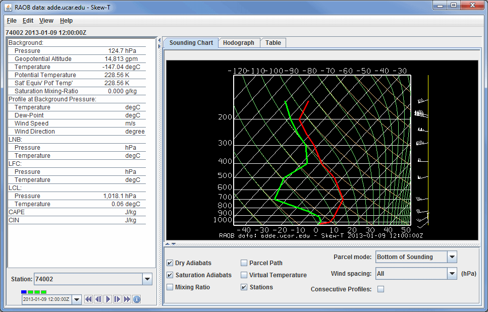
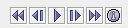
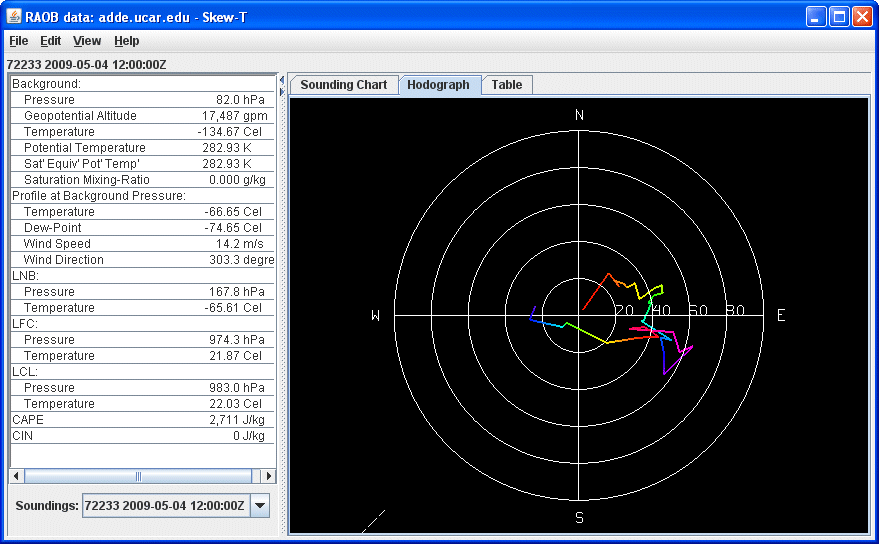
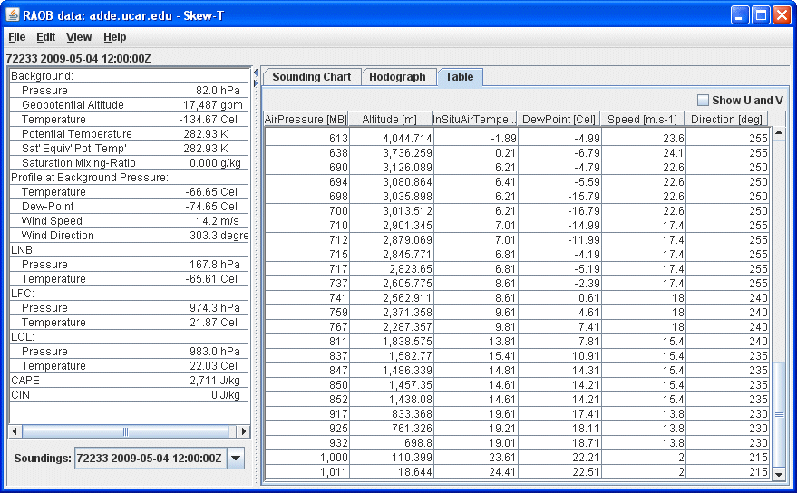

Overview
The meteorological sounding display is available for:
RAOBs,
numerical weather prediction model output, and from a local file that contains aircraft track data.
The dewpoint temperature is computed by internal code from temperature and
relative humidity grids.
To load sounding data see Choosing
RAOB Sounding Data and Displaying
Gridded Data. The sounding display consists of a table of aerological (thermodynamic)
parameters and three tabs: Sounding Chart, Hodograph, and Table.
The Sounding Chart tab includes an aerological diagram (e.g., skew-T,
Stuve, Emagram):

Image 1: Skew-T of Point Data
Properties
- Station - Selects which station's sounding is being displayed when multiple stations are selected in the Main Display window.
-  Time Animation Control - Controls the looping of displays through time. See Time Animation Control for more information.
- Dry Adiabats - Displays the dry adiabats on the Skew-T diagram.
- Saturation Adiabats - Displays the saturation adiabats on the Skew-T diagram.
- Mixing Ratio - Displays the mixing ratio lines on the Skew-T diagram.
- Parcel Path - Displays the path of a parcel of air lifted pseudo-adiabatically
from the initial point to the top of the Skew-T diagram.
- Virtual Temperature - Displays the virtual temperatures of the environmental profile and
pseudo-adiabatically lifted air-parcel.
- Grid Points - Plots points in the Main Display window spatially separated by the resolution of the data. These grid points represent the actual locations of where the data values in the sounding are retrieved. The data probe may be between one of these grid points, but the display in the sounding will be indicative of the nearest grid point to the location of the probe.
- Parcel mode - Specifies how the initial conditions of the pseudo-adiabatically
lifted air-parcel are determined from
the environmental sounding
according to the mode indicated. This will affect how the LNB, LFC, LCL, CAPE, and CIN are calculated. The choices are:
- Bottom of Sounding - Determines the initial conditions of the
parcel from the temperature and dewpoint at the level of highest pressure. The path will update whenever the profiles change.
- Below Cursor - Determines the initial conditions of the parcel
from the temperature and dewpoint profiles by computing
the pressure-weighted mean potential temperature and water vapor mixing-ratio
of the atmosphere that lies below the cursor when the middle mouse
button is pressed. Thus, pressing the middle button at 950 hPa for
a sounding that starts at 1000 hPa will effectively mix the lower 50
hPa of the atmosphere and lift the resulting parcel starting at 975
hPa. The path will update whenever the profiles change and as the cursor is dragged.
- At Cursor Pressure - Determines the initial pressure, in-situ
temperature, and moisture content of the parcel from the
temperature and dewpoint profiles at the pressure of the cursor when
the middle mouse button is pressed. The initial moisture content is determined from
the dewpoint profile at the initial pressure. The path will update whenever the profiles change and as the cursor is dragged.
- At Cursor (Press, Temp) - The computed path of a lifted
parcel is automatically updated when appropriate. The initial pressure and in-situ temperature of the parcel equal the
pressure and temperature values under the cursor when the middle mouse
button is pressed. The path will update
whenever the profiles change and as the cursor is dragged.
- Wind spacing - Allows the user to control which wind levels are shown in the display.
- Consecutive Profiles - Allows for plotting both the current sounding, as well as the sounding of the next time step in one image. The temperature and dewpoint temperature profiles of the current timestep will be dashed, and the profiles of the next timestep will be displayed as solid lines. The current time's winds will be displayed directly to the right of the sounding, and the next timestep's winds will be shown to the right of that. This makes it easy to see how a profile will change through time. This will reduce the number of time steps in the loop by 1. This option will not make any changes to the display if only have one timestep is displayed.
A label above the sounding's chart shows the station number, date, and time of the sounding. When displaying sounding plots made from gridded
model output, the position of the sounding is shown in the Main Display window
by a solid-color selector point and vertical line. The model-output-based
sounding position over the map can be changed by dragging the selector point with the left
mouse button.
When displaying a sounding diagram made from gridded numerical weather model
output, there is a pull-down selector menu of the model output valid times
in the upper right corner.
The animation control buttons are available
in either case:
To increase precision using the sounding diagram, enlarge the window by dragging
on the edges. Zoom in on the sounding diagram by holding down the Shift key
and dragging the right button upwards; drag downwards to zoom out. Zooming can also be done by using the scroll wheel on the mouse. Pan the diagram by dragging the mouse pointer in any direction while holding down
the right mouse button.
The temperature and dewpoint traces can be modified via the cursor. Press
the left button on the first data-point to be modified and drag it horizontally
along an isobar to the desired position, then move the pointer diagonally along
an isotherm to keep the data-point at the desired position and to pick-up the
next data-point. Repeat until done and then release the mouse button.
The Hodograph tab shows a 3D hodograph display:

Image 2: Hodograph of Point Data
The hodograph is enabled if the plotted data includes wind fields. It can
be rotated into 3D by clicking and dragging the right mouse button. Zoom in/out by holding down Shift and right-clicking and dragging up/down or by using the scroll wheel on the mouse. To reset the
hodograph, use Ctrl+R.
The Table tab shows a table of all values in the sounding:

Image 3: Table of Point Data
Properties
- Show U and V - Breaks the Speed and Direction categories up into the individual U and V components of the wind.
Aerological Parameters
The table to the left of the sounding diagram contains aerological parameters
determined from the atmospheric sounding displayed in the diagram. The following
abbreviations are used:
- LCL: Lifting Condensation Level - The level at which a pseudo-adiabatically
lifted air-parcel becomes saturated with water vapor.
- LFC: Level of Free Convection - The level at which the virtual temperature of
a pseudo-adiabatically lifted air-parcel changes from being less than the
environment's virtual temperature to being greater than the environment's virtual temperature.
- LNB: Level of Neutral Buoyancy - The level above the LFC at which the virtual
temperature of a pseudo-adiabatically lifted air-parcel equals the environment's
virtual temperature.
- CAPE: Convective Available Potential Energy - The area between the virtual temperature
trace of the pseudo-adiabatically lifted air-parcel and the virtual temperature
trace of the environment from the LFC to the LNB in which the parcel's virtual
temperature is greater than the environment's (positive CAPE connotes convective
development).
- CIN: Convective Inhibition - The negative of the area between the virtual temperature
trace of the pseudo-adiabatically lifted air-parcel and the virtual temperature
trace of the environment from the parcel's initial conditions to the LFC
in which the parcel's virtual temperature is less than the environment's
(negative CIN connotes initial positive work to lift the parcel).
Menus
Many of the menu items seen utilizing this display are standard options that can be found in the Menus section of the Layer Controls page. However, there are some options that are unique to this display.
The File menu has this unique option:
- Export Sounding Table to File... - Exports the data in the Table tab to an Excel file.
The Edit menu has these unique options:
- Reset Sounding - Reverts the sounding back to its initial configuration after any modifications have been made to it.
- Selector Color - Changes the color of the shape representing the location of the sounding in the Main Display window.
The View menu has these unique options:
- Use Data Projection - Re-centers the display and resets the zoom level back to the display's initial settings without changing any other preferences that have been modified.
- Sounding Chart - Allows for capturing an image or movie of the sounding and change many aesthetic preferences.
- Hodograph - Allows for capturing an image or movie of the hodograph and change aesthetic preferences related to the Main Display window.